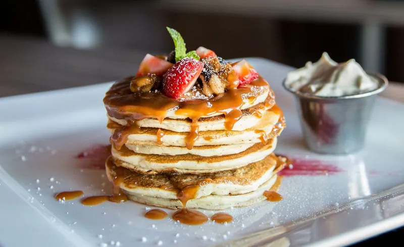
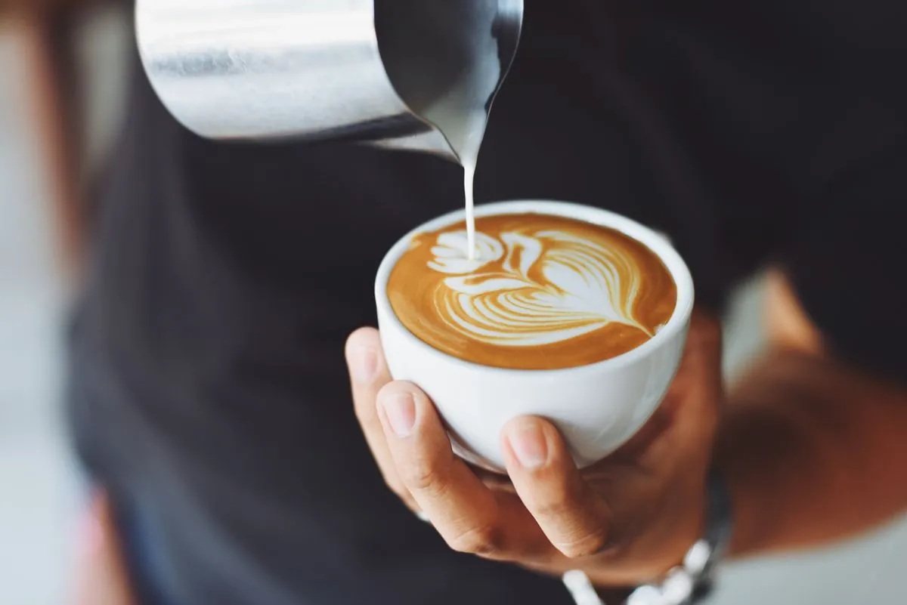
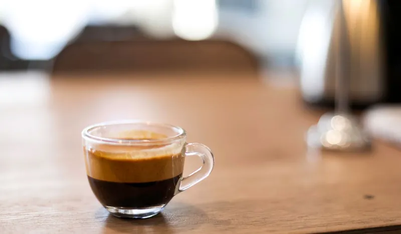
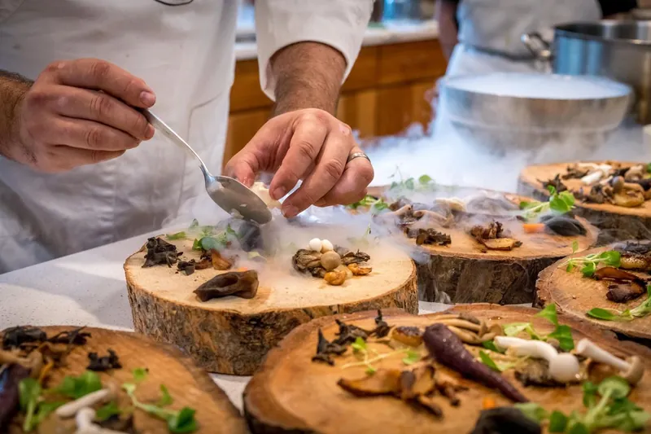
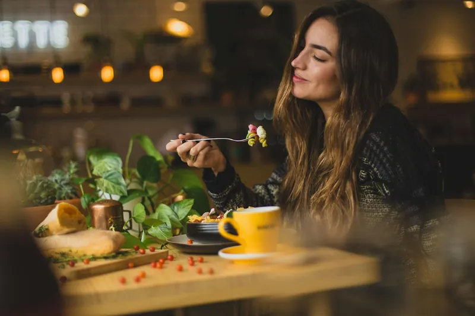

Pancakes with caramel & berries
A tall stack, warm caramel, fresh strawberries and a spoonful of cream — the sweet start the breakfast table is known for.
Sweet startUniversity Town · Peshawar · Since the days of Cafe Masooms
One of the first cafés to open in Peshawar, Cafe Crunch has been the University Town table for steaks, pastas, burgers and the New York cheesecake regulars cross town for — with a bake shop of its own and room for the whole family, indoors and out.

From the bake shop
Cafe Crunch is a café and a bake shop in one — cakes, pastries and desserts made on the premises. Swipe through the counter favourites.
Coffee sponge, chocolate cream, cocoa dust.
A box of the bake shop’s hand-finished pieces.
Thick, cold, made with fresh strawberries.
Warm stack, caramel drizzle, berries, cream.

Short, strong, and the honest end to a long lunch.
Coffee & drinks
Reviewers single out the drinks as often as the food: “fantastic iced coffee and mocktail drinks” is how one regular puts it. Come for a slow coffee, stay for a second one.


The story
Founded by Ms. Sadia Bilour, Cafe Crunch was among the first cafés to open in Peshawar — and it helped shape the city’s modern café culture. Before it was Cafe Crunch, the same room was Cafe Masooms; regulars still remember it.
Inside, the décor is a tribute to 1960s Hollywood, with posters of Marilyn Monroe, James Dean and Elvis Presley, and comfortable leather armchairs and sofas. There is indoor seating and an outdoor area — reviewers mention the outdoor sitting in winter, and a family-friendly room where children are welcome.
Why locals choose Cafe Crunch
New York cheesecake, molten lava cake and Death by Chocolate are the names that come up again and again.
Reviewers call the steaks and pastas the plates to order — generous portions, cooked the way you ask.
The starter platter and the super nachos are the table’s first order — enough for two, and a favourite for years.
Two kinds of evening: a warm room inside, and outdoor seating for Peshawar’s winter nights.
Reviewers describe the staff as decent, well trained and friendly — the kind of service that brings people back.
More than 400 dishes across six cuisines, with vegetarian-friendly options and a huge choice for groups.
“Cafe crunch by far is the best cafe in town… Love their New York cheesecake… I love the appetiser platter. Great ambience and has both outdoor and indoor sitting areas. Family-friendly.”
From the table
Tap any photo to see it full size.
Bookings
Reservations are available — the café lists table booking among its services. Pick a day and a party size, then call to confirm. For takeaway, you can also order through foodpanda.
Find us
Facebook — Cafe Crunch ↗
16,000+ followers
| Monday – Sunday | 11:00 AM – 12:30 AM |
|---|
Open every day of the week, lunch through late night. Hours are listed on the café’s Google Business Profile — it is worth a quick call before a late visit.
Questions
Reservations are available, and booking ahead is a good idea for weekend evenings and family gatherings. Call 091-5701061 to confirm your table.
Six cuisines on one menu — Pakistani, Chinese, Thai, Indian, American and Arabic — with more than 400 dishes. Steaks, pastas, burgers, pizzas and hot wings are the best-known plates, and there is a bake shop for cakes and desserts.
Yes — the café has both indoor and outdoor sitting areas, and reviewers particularly recommend the outdoor seating on winter evenings.
Yes. Reviewers describe it as family-friendly, and highchairs are available. The room works for family dinners, dates and business meetings alike.
Yes — takeaway is available, and you can order through foodpanda as well. Call the café on 091-5701061 to order ahead for collection.
Every day, 11:00 AM to 12:30 AM — lunch, dinner and late-night coffee and dessert.
House 45-D, Old Jamrud Road, University Town, Peshawar · Open daily 11:00 AM – 12:30 AM